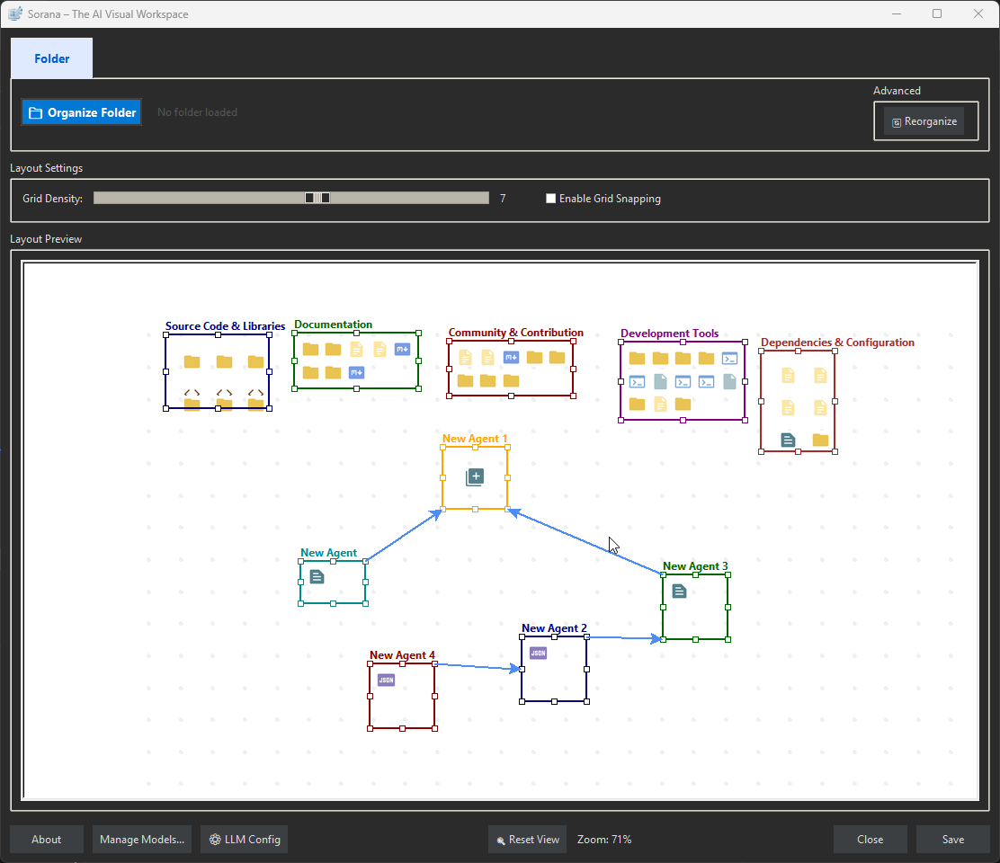

Personal AI Workspace
One tool.
That actually knows you.
Sorana connects you to 50+ AI models from Mistral, Nvidia, OpenRouter, Stepfun and more — most of them completely free. Switch providers in seconds without leaving your workflow.
50+
AI Models
8+
Providers
Free
To use
100%
Local & Private
Overview, Your Knowledge, Your AI, Your Rules
We got tired of re-explaining ourselves to AI every single day. Our notes were in Obsidian, our tasks scattered across folders, and every time we opened a new chat, the AI had forgotten everything. We wanted a workspace that thinks the way we do: through connections, context, and accumulated knowledge. So we built Sorana, a personal AI that learns your projects, remembers your preferences, and makes your knowledge actually work for you.
About Sorana
Sorana is your personal AI knowledge workspace, a second brain that actually acts. Unlike chatbots that forget you the moment you close the window, Sorana builds a lasting memory of your projects, files, and thinking style. Open it tomorrow and it already knows where you left off. Visualise your entire knowledge base on a spatial 2D canvas (like Obsidian Canvas, but AI-powered), chat with any document in plain language, and let your AI handle repetitive tasks, organising files, researching topics, managing emails, all without leaving your workspace. Everything runs on your machine. Your data stays yours.
See Sorana in action: spatial knowledge canvas, persistent AI memory, and document chat, all running privately on your Windows machine.
💡 Why Sorana, Because Your AI Should Know You
🧠 You're Tired of Re-Explaining Yourself Every Day
🔌 Your AI Talks, But Can't Actually Do Anything
🔒 Your Knowledge Shouldn't Live on Someone Else's Server
💸 Long Conversations Become Slow and Expensive
👁️ Half Your Knowledge is Locked in PDFs and Images
📂 "Where Did I Save That?", Find Anything by Topic, Instantly
🆚 How Sorana Compares


Core Features
AI Memory
Think of Sorana's memory as a personal knowledge profile that grows with every conversation. It captures what matters, your projects, your writing style, your preferences, so your AI gets sharper over time, not blunter. Like a second brain that never forgets, even after months away.
A Knowledge Profile That Grows With You
How the Memory System Works
What This Means for Your Daily Work
MCP Server & Integrations
Your AI should do, not just advise. Tools like Obsidian and Notion help you organise knowledge, but they can't act on it. Sorana's built-in automation lets you give plain-language instructions and watch them execute: move that file, summarise this folder, fetch that article, archive those emails. No app switching. No copy-pasting. Just results.
- Open MCP Manager to configure and enable servers
- Connect external MCP servers if needed (Google Drive, GitHub, databases, etc.)
- Create an agent in the workspace
- Right-click on the agent title and select "Chat"
- Interact directly with files, folders, web content, and external services
MCP Manager
File Operations
Web Content Tools
Gmail MCP Server
🚀 Obsidian Export
Already using Obsidian? Sorana is the AI layer your vault has been missing. Export your Sorana workspace directly into Obsidian, your spatial file groupings, topic relationships, and knowledge structure, in formats Obsidian natively understands. Use Sorana as your intelligent AI workspace, and keep your Obsidian vault as your permanent knowledge archive. The best of both worlds.
📄 Export to Canvas
Export your Sorana workspace groups and file arrangements to Obsidian's infinite Canvas. Preserve the visual organization and spatial grouping of your files, bringing your AI-workspace layout into Obsidian's visual environment.
- Exports groups and file lists
- Preserves your workspace organization
- Creates standard Obsidian Canvas files
- Works with any Obsidian vault
🕸️ Export to Graph View
Generate a knowledge graph from your workspace file structure and groupings. Visualize how your files and projects relate to each other in Obsidian's interactive Graph View.
- Shows file relationships and groupings
- Based on your workspace organization
- Creates standard Markdown with links
- Compatible with Obsidian Graph View
Why this matters for Obsidian users: You've already invested in your vault, your notes, plugins, and workflows. Sorana doesn't replace that. It enhances it. Add AI memory and automation to your existing knowledge base, then export the AI-organised structure back to Obsidian:
- ✅ Leverage your existing Obsidian vault, integrate Sorana's AI workspace into your established knowledge base
- ✅ Use Obsidian's powerful plugins, Dataview, Templater, Excalidraw, and hundreds more
- ✅ Sync across all your devices via Obsidian Sync, Git, or cloud storage
- ✅ Share with the Obsidian community, your exported workspaces are compatible with the entire Obsidian ecosystem
- ✅ Never lock-in, your data remains in standard Markdown files you own
Document Processing & OCR
Problem: Scanned PDFs and images are invisible to AI, no text content to search or chat with.
Solution: OCR extracts text from scanned documents, images, and PDFs. Once processed, documents become searchable and indexed via adaptive retrieval (semantic search → keywords → full-text fallback) so AI finds precise answers from your documents. Process documents via the context menu ('Document Overview' and 'Process Documents'), particularly valuable for PDFs and image-based documents.
OCR Capabilities
Encoding Support Notes
AI & Models
AI Model Performance
AI Integration
Model Manager Split View
Hardware Requirements
Recommendation
Setup
Your knowledge deserves an AI that actually knows it. Download Sorana today, runs fully offline, no subscription, no cloud, no blank slates. Build a personal AI workspace that grows smarter every time you use it.
🎯 Perfect For
- 📚 Researchers & academics, chat with hundreds of papers, books, and scanned notes in one place
- ✍️ Writers & journalists, build a living reference library that remembers your style, sources, and ideas
- 🧑💼 Consultants & freelancers, maintain full AI context across multiple long-running client projects
- 🎓 Students, turn notes, PDFs, and lecture slides into a personal knowledge base you can actually talk to
- 🧠 Obsidian & Notion users, add an AI layer that learns from your vault and can act on it
- 🔒 Privacy-conscious professionals, full AI power with zero data leaving your machine
No installation required. Your data stays on your machine.
$ md5sum.exe Sorana.exe v1.0.44 bd52f653ea28ee4297c83a889d7e4c6d

Featured on Softpedia:

System Requirements
| Component | Minimum |
|---|---|
| OS | Windows 11 (64-bit) |
| 🧠 AI Support | Built-in models or on-prem/cloud AI services |
| 💾 RAM | ≥ 4 GB |
| 💽 Storage | Minimum 2 GB (app + model) + .sorana/ data folder |
| ⚡ Rights | Standard user |
Support
Join our Discord community
Leave a review or star the project

Support via PayPal or Bitcoin Cash

Bitcoin Cash (BCH)
bitcoincash:
qrvhk77ujevd9n7jse4jewm99eg95at7tvc6m9v2vv